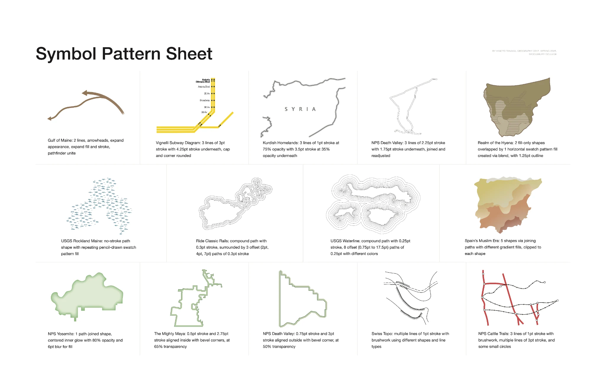
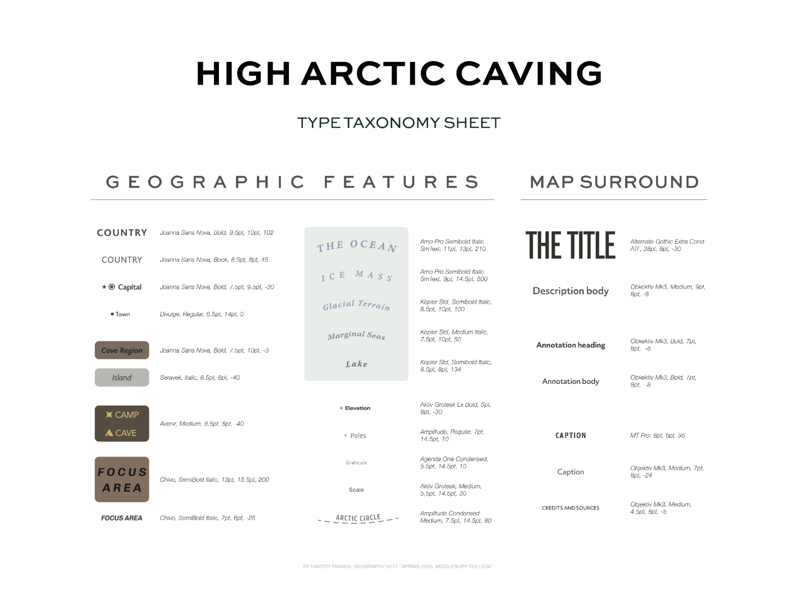

Cartographic Studies
Two cartography exercises: recreating map symbols and studying type.

For the first, I recreated symbols from published maps in Illustrator to learn how they were built. For the second, I studied the typography in National Geographic’s High Arctic Caving graphic.
Jeff Howarth taught me that every choice on a map matters. These exercises helped me pay closer attention to line weight, spacing, hierarchy, and labels.
Process
